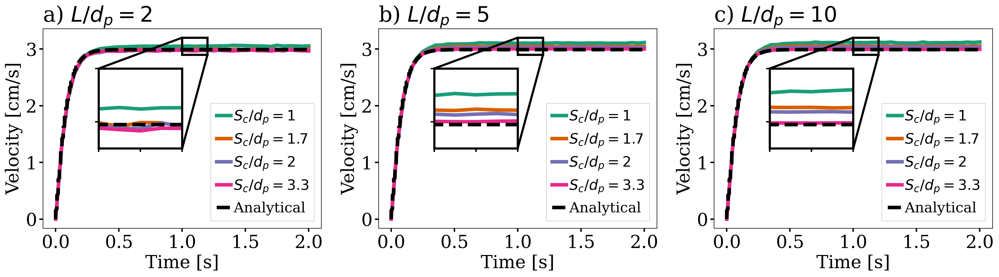

Single Particle Sedimentation#
It is strongly recommended to visit DEM parameters and CFD-DEM parameters for more detailed information on the concepts and physical meaning of the parameters used in the DEM and CFD-DEM solvers.
Features#
Solvers:
lethe-particlesandlethe-fluid-particlesThree-dimensional problem
Displays the selection of models and physical properties
Simulates a single particle sedimentation in water
Uses the
qcmvoid fraction scheme withgauss-lobattoquadraturePython post-processing script using PyVista
Files Used in This Example#
All files mentioned below are located in the example’s folder (examples/unresolved-cfd-dem/single-particle-sedimentation).
Parameter file for initial particles generation:
initial-particles.prmParameter file for CFD-DEM simulation of the Boycott effect:
single-particle-sedimentation.prmPost-processing script:
single_particle_sedimentation.pyModule for post-processing script:
single_particle_sedimentation_funcs.py
Description of the Case#
This example simulates the sedimentation of a single particle in a water tank due to gravity. As all unresolved CFD-DEM applications and examples, we start by introducing the particle in our domain by running a DEM simulation (using lethe-particles). The DEM simulation generates checkpoint files that will be used by our unresolved CFD-DEM application (lethe-fluid-particles) to determine the initial state (position, velocity, etc.) of the particles.
This is most probably the simplest application case of CFD-DEM we can think of and hence, it is very useful to learn the fundamentals of the method. In Lethe, we use examples such as this to guide the user on how to launch a simple example and to track the performance of our code.
We use this case to assess the grid convergence of the quadrature centered method (QCM), by Geitani and Blais [1]. We check if the adequate void fraction is recovered and we monitor the terminal velocity of the sedimenting particle. We use the properties given by Ferreira et al. [2] for the particle and fluid.
DEM Parameter File#
The DEM subsections are as follows.
Mesh#
In this example, we are simulating a rectangular-based tank. We use the deal.II GridGenerator to generate a hyper rectangle that is subdivided along its height:
subsection mesh
set type = dealii
set grid type = subdivided_hyper_rectangle
set grid arguments = 20,40,20:-0.02663,0,-0.02663:0.02663,0.10652,0.02663:false
end
Note
The grid is 20x40x20 times the particle diameter.
Important
The grid of the particle insertion needs to be the same used in the unresolved CFD-DEM simulation. If you wish to use another mesh refinement, the particle insertion mesh needs to be adapted accordingly.
Simulation Control#
The time step in this case is the same as the time end. Since we only seek to insert the particle at the top of the channel, we only require 1 insertion time step.
subsection simulation control
set time step = 1e-6
set time end = 1e-6
set output frequency = 1
set output path = ./output_dem/
end
Restart#
We save the files obtained from the single iteration by setting the frequency = 1. These files will be used to start the CFD-DEM simulation.
subsection restart
set checkpoint = true
set frequency = 1
set filename = dem
end
Lagrangian Physical Properties#
The gravity is set to \(0\) since the DEM simulation only loads the particle.
subsection lagrangian physical properties
set g = 0.0, 0.0, 0.0
set number of particle types = 1
subsection particle type 0
set size distribution type = uniform
set diameter = 0.002663
set number of particles = 1
set density particles = 1029
end
end
Insertion Info#
We use the list insertion method to insert a single particle in our domain at a specific location:
subsection insertion info
set insertion frequency = 1
set insertion method = list
set list x = 0
set list y = 0.08
set list z = 0
end
Running the DEM Simulation#
Assuming that the lethe-particles executable is within your path, the simulation can be launched on a single processor by typing:
You can visualize the insertion with Paraview:

The particle has been inserted and it is now possible to simulate its sedimentation.
CFD-DEM Parameter File#
The CFD simulation is carried out using the particle inserted within the previous step. We introduce the different sections of the parameter file single-particle-sedimentation.prm needed to run this simulation.
Simulation Control#
The simulation is run for \(2\) s with a time step of \(0.005\) s. The time scheme chosen for the simulation is first order backward difference method (BDF1). The simulation control section is shown:
subsection simulation control
set method = bdf1
set output name = result_
set output frequency = 10
set time end = 2
set time step = 0.005
set output path = ./output/
end
Physical Properties#
We set a density of \(996.8\) kg/m3 and a kinematic viscosity of \(8.379e-7\) m2/s as to simulate the particle sedimentation in water at \(25^\circ\text{C}\) (same conditions as in Ferreira et al. [2]).
subsection physical properties
subsection fluid 0
set kinematic viscosity = 8.379e-7
set density = 996.7775
end
end
Boundary Conditions#
For the boundary conditions, we choose a slip boundary condition on all the walls of the channel.
subsection boundary conditions
set number = 1
subsection bc 0
set id = 0
set type = slip
end
end
Lagrangian Physical Properties#
This section is identical to the one previously mentioned for the DEM simulation of particle insertion. The only difference is the definition of gravity. For the vertical case, we set \(g_y = -9.81\) and \(g_x = g_z = 0\)
Void Fraction#
Since we are calculating the void fraction using the particle insertion of the DEM simulation, we need to read the DEM files which we already wrote using check-pointing. We, therefore, set the read dem to true and specify the prefix of the dem file name = dem.
We choose to use the quadrature centered method (QCM) to calculate the void fraction. For this, we specify the mode to be qcm.
We do not want the volume of the sphere to be equal to the volume of the element. For this, we set the qcm sphere equal cell volume equals to false. Then, we set the diameter of the QCM sphere to be twice the size of our particle’s diameter. We also set the smoothing length equal to 10 times the particle diameter. Lastly, we choose the gauss-lobatto quadrature rule with 5 quadrature points. More details on these parameters are available on the documentation on void fraction parameters.
subsection void fraction
set mode = qcm
set qcm sphere equal cell volume = false
set qcm sphere diameter = 0.005326
set read dem = true
set dem file name = dem
set l2 smoothing length = 0.02663
set quadrature rule = gauss-lobatto
set n quadrature points = 5
end
CFD-DEM#
The CFD-DEM section is:
subsection cfd-dem
set grad div = true
set void fraction time derivative = true
set drag force = true
set buoyancy force = true
set shear force = false
set pressure force = false
set drag model = rong
set coupling frequency = 100
set grad-div length scale = 0.005
set vans model = modelA
end
For drag, we use the Rong model to determine the momentum transfer exchange coefficient. The VANS model we are solving is model A.
Running the CFD-DEM Simulation#
The simulation is run using the lethe-fluid-particles application. Assuming that the executable is within your path, the simulation can be launched as per the following command:
Post-processing#
A Python post-processing code called single_particle_sedimentation.py is provided with this example. It is used to plot the velocity and void fraction. The script uses the PyVista library to plot the results.
Running the script is as simple as launching the following command:
Results#
This example is meant to assess QCM’s mesh independency. For this, we need to explain some limitations of our unresolved CFD-DEM approach, namely:
Currently, when looping through the cells, we can only access to informations about particles inside the current cell or its immediate neighbors. This is a common limitation as accessing higher neighborhood layers can be computationally expensive. Hence, the finest element we use is of the same size of the particle (\(S_c/d_p \geq 1.0\), where \(S_c\) is the characteristic size of our element and \(d_p\) is the particle’s diameter).
We do not want our quadrature sphere size to change with the element size. So, we set the
qcm sphere equal cell volumetofalseand set the sphere diameter to be twice the particle’s diameter for all mesh refinements (\(D_\text{qcm}/d_p = 2.0\) corresponding to an approximated maximum quadrature sphere size \(D_\text{qcm}\) we can have for the finest mesh \(S_c/d_p = 1.0\)).Regardless of the QCM sphere size, we need to guarantee the spheres together cover our entire domain so that we conserve mass (i.e., have all particles accounted for while calculating the void fraction). However, if we use the same number and size of QCM spheres for all meshes, we will eventually have uncovered regions in our domain. To avoid this, we increase the number of quadrature points used in the void fraction calculation by applying
set n quadrature points = 5(this number can be increased for coarser meshes). We use the same number of quadrature points for all mesh refinements to avoid any bias in the results.To improve domain coverage, we use Gauss-Lobatto quadrature rule as the quadrature points are more evenly distributed than the default Gauss quadrature.
Lastly, we need to consistently refine our meshes so that the particle falls in the same relative position to our degrees of freedom. This is important because if we analyze how our void fraction value evolves in a line conciding with the particle’s falling trajectory, the magnitudes of the projected void fraction will vary with how far the particle is from the degrees of freedom.
The above factors considered, we can now analyse the results. First, we show a video of the particle falling in the fluid for the finest mesh. The arrows stand for the velocity of the surrounding fluid.
The same simulation is run for 4 different mesh refinements, \(S_c/d_p = \{1.0, 1.7, 2.0, 3.3\}\); and 3 different void fraction smoothing lengths, \(L/d_p = \{2, 5, 10\}\). First, we compare the results of the particle velocity with the analytical solution using Dallavalle’s drag correlation. As shown in the following figure, all results are close to the expected analytical results. Specifically, the coarser the mesh and the smaller the smoothing length, the results approximate better the analytical solution. However, the difference is incipient, which indicates any solution would be valid.
We also compare the void fraction convergence in a line conciding with the particle’s falling trajectory. As shown in the following figure, regardless of the void fraction smoothing length, the void fraction converges with the mesh refinement, which is a good indicator of the QCM’s mesh independence.